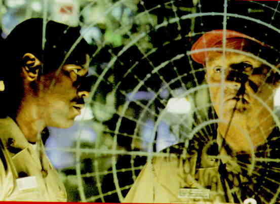

CRIMSON TIDE A-, A US/1995/COLOR/WIDESCREEN 2.35:1/STEREO SURROUND, AC-3/118 MINUTES/DIRECTED BY TONY SCOTT/STARRING DENZEL WASHINGTON, GENE HACKMAN/DISNEY/2 DISCS/CLV/THX/$44.99 The overall impact of Crimson Tide adds up to a greater whole than the sum of its parts. The nuclear confrontation actioner set aboard the United States Submarine Alabama is enormously successful in accomplishing its goals. It sets up the confrontation between Captain and Executive Officer of the boat carefully as it parallels the confrontation between the United States and Russia. The reigns of tension are maintained so tightly that those minor false steps do not intrude on the pure pleasure of this underwater voyage. The brilliance of Crimson Tide  What a dynamic duo of actors pitted against one another. Denzel Washington and Gene Hackman are fabulous. Washington’s Hunter is the modern clean-cut Navy man pitted against the savvy veteran Captain in Hackman. You will seldom see a better matched set of stars. George Dzundza, playing Cob(Chief of Boat)is given an excellent role to show off his acting skill and Viggo Mortensen does excellent supporting work in the role of Weps. Thoroughly enjoyable as pure action, Crimson Tide provides more than a fair measure of pleasure to the thinking man. Director Tony Scott has done a terrific job of putting together the diverse elements that make Crimson Tide such a top notch film experience. Scott opens up the confines of the submarine with imaginative movement, yet maintains the claustrophobic tension. Scott gets great work from the camera under DP Dariusz Wolski and Hans Ziimmer produces a worthy score. Crimson Tide is stunning. The images are consistently vivid. Though almost the entire film is set within the confines of a submarine, some of the most difficult material is handled impeccably: control rooms running under restricted conditions with a pervasive red glow, look flawless on the disc. Contrasts are in perfect balance allowing all the subtleties of this beautifully photographed film to translate to film. It sure looks a lot better than the scratch laden print I suffered through in a brand new theater complex. The wonderful sound editing is precisely duplicated for the laser disc. The ambient detail surrounding the players adds a significant level of realism to the movie. This is a first class production, from filming to laser disc. The disc concludes with an entertaining "making of" promo short with the principals briefly commenting on their roles in production or character motivation and then the theatrical trailer. Just for the record, Crimson Tide is the nick name for the Alabama football or does it stand for the "Red Menace." |